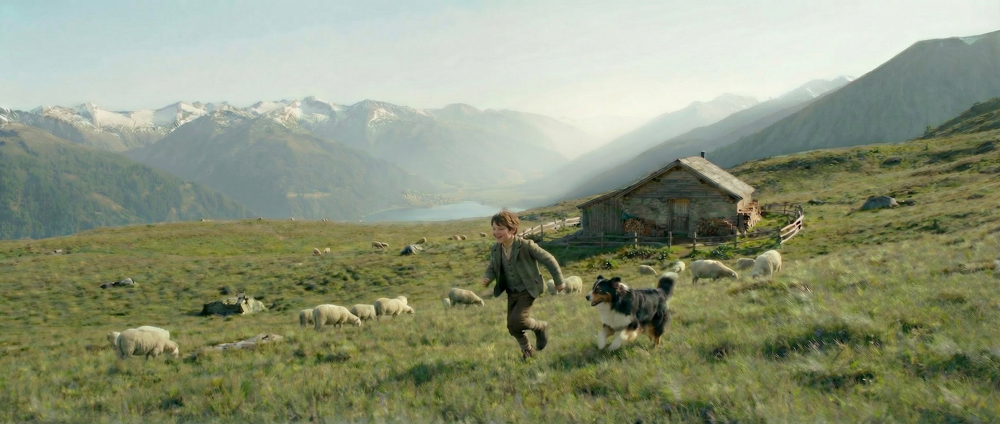
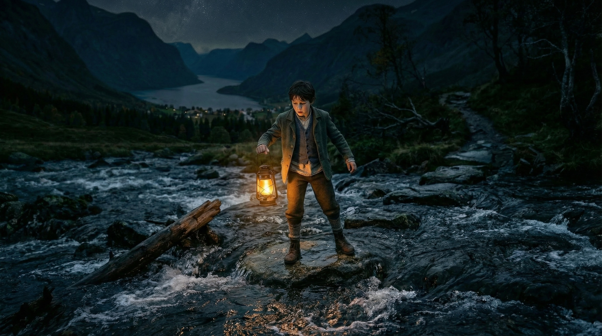

A visual project about farewell, transition, and the courage to keep moving forward alone.
Asym \ phaseis a visual narrative project built through poster design, character design, Blender-based spatial reconstruction, and a script-centered narrative structure.
The current version is not a finished animated short, but a staged presentation of the project’s visual development, holding on to the parts that are already the most mature and convincing.
The title is the structural core of the project. It connects visual form, narrative logic, and emotional meaning through one compact system.
Asym
Asymptote
Asym comes from asymptote. It points to a state of constant approach without full arrival, echoing both the project’s English narrative structure and the lantern’s arc through the dark. It touches memory, distance, and the feelings that can only be carried forward.
\
Trajectory / Transition
\ is not a simple separator. Visually, it works as a slanted trajectory: the lantern’s arc through the dark, and a line of feeling that keeps approaching without fully settling. Semantically, it sits between Asym and phase, closing one layer of experience while opening the next. In a computing sense, it also suggests escape, separation, and path continuation. Here, it becomes both the trace of farewell and the point of departure.
Phase
A stage of life
Phase names a stage of life rather than a sealed ending. It covers both the childhood self who still needs Nello to drive away fear, and the later adult self in the train compartment. What matters here is not closure, but how one phase is carried into the next.
Storyboard Preview
Three realistic frames carry the story from meadow to train carriage.
The homepage keeps only this light preview, so the story appears in fragments first rather than all at once. The full storyboard sequence and scene archive are kept on the Script page.

Scene 01 / Meadow, cottage, and Nello.

Scene 02 / Forest crossing, the lantern’s arc, and the first fireflies.Scene 05 / Window light, and the letter written again.
Two keyframes test how the storyboard shifts toward the final image language.
Scene 02 and Scene 05 are kept here as the clearest style anchors at this stage: one in the night forest, one inside the train compartment, each holding one side of the project’s childhood and adult emotional lines.